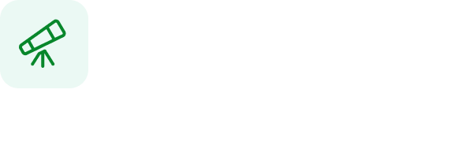
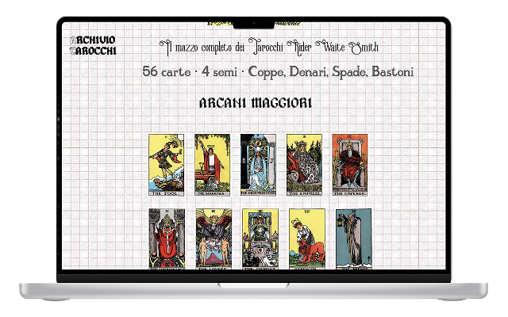
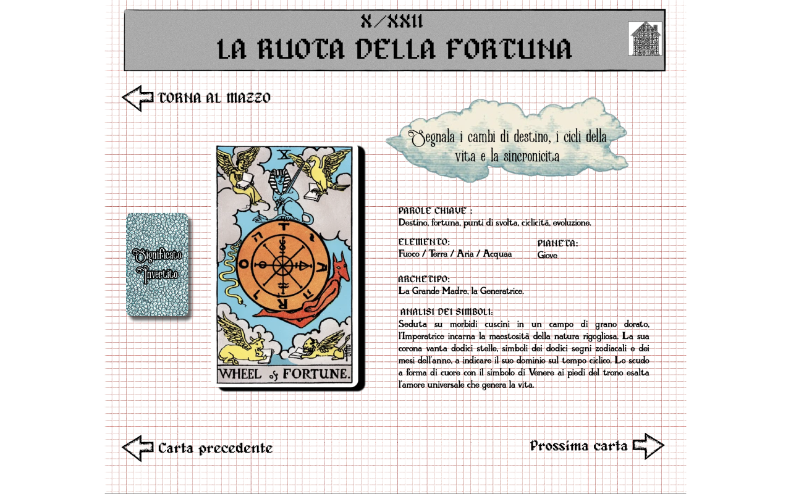
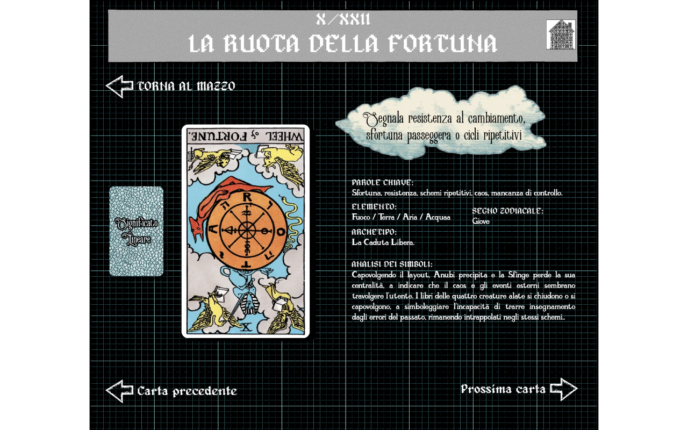

Aya moutaber · UI/UX Design · 2026
ARCHIVIO TAROCCHI
Un archivio visivo per oggetti grafici sottovalutati.
Un sistema di consultazione che legge i tarocchi come immagini, simboli, epoche e relazioni, a partire dal mazzo Rider Waite.

Studente
Aya Moutaber
Corso
ITS Web Design e strategie Digitali
Modulo
UX/UI Design - Web e Mobile
Anno
ITS Academy I-CREA, CFP Bauer Milano · 2026
progetto
Oggetti storici e visivi da osservare, confrontare e studiare.
contributo del progetto

Navigazione Mazzo
Scegli un mazzo dalla homepage e sfoglia il catalogo di tutte le carte divise per categoria.

Consultare la carta
Leggi la scheda completa: illustrazione, significato dritto e invertito, attributi simbolici.

Confrontare
Cerca una carta per icona e visualizza come appare in tutti i mazzi disponibili, a confronto.
Struttura
Tre percorsi di accesso alle carte
Dalla homepage si accede al catalogo in tre modi: navigando per mazzo, filtrando per significato (dritto o rovescio), oppure cercando una carta per icona per confrontarla tra tutti i mazzi disponibili.
Catalogo diviso per categorie, scheda con dritto e rovescio
Una volta scelto il mazzo, il catalogo mostra tutte le carte divise per categoria: Arcani Maggiori, Coppe, Spade, Bastoni, Denari. Ogni scheda include sia il significato dritto che quello invertito — con la carta mostrata capovolta per il rovescio.
Sfondo e stile della scheda cambiano per rendere visivamente distinguibili i due significati. Dalla scheda si può tornare al mazzo o passare alla carta precedente e successiva senza tornare al catalogo.



Palette e layout
Pochi colori per non competere con le illustrazioni
Ho limitato la scelta cromatica per mettere in risalto le illustrazioni delle carte. Il desktop usa solo bianco, nero, rosso scuro e azzurro. Il mobile aggiunge colori per le categorie dei semi.
Desktop
- Bianco Sfondo principale
- Nero Testo e sfondi scuri
- Rosso scuro Accento primario
- Azzurro Accento secondario
Mobile (aggiuntivi)
- Oro Categoria Denari
- Blu Categoria Spade
- Azzurro chiaro Categoria Coppe
- Viola Categoria Bastoni
Sfondo e carta cambiano con il significato
Nella scheda di dettaglio, la carta occupa il pannello sinistro con la sua illustrazione. Sul pannello destro si trovano titolo, tipo, attributi simbolici e descrizione. La carta viene mostrata capovolta per il significato invertito.
Un filtro differenza applicato alla griglia rende tutto omogeneo visivamente. Il cambio di sfondo tra significato dritto e rovescio è un segnale visivo immediato, non solo decorativo.
Scelte di progetto
Ogni scelta visiva ha una ragione precisa
Dall'estetica non-esoterica alla carta capovolta per il rovescio, dal filtro differenza sulla griglia alla navigazione per icona. Apri un punto per leggere il ragionamento dietro la scelta.
La maggior parte dei siti di tarocchi usa un'estetica molto riconoscibile: viola, cristalli, atmosfere mistiche. Questa scelta riduce i tarocchi alla sola dimensione esoterica. Io volevo trattarli come oggetti grafici e culturali: un archivio visivo con una direzione quasi catalografica, più vicina alla consultazione che alla divinazione.
La carta viene mostrata capovolta per il significato invertito, così il rovescio si riconosce subito, senza dover leggere il testo.
Si cerca una carta per icona e si vede come appare in tutti i mazzi disponibili, a confronto.
Un filtro differenza applicato alla griglia rende tutto omogeneo visivamente.

Materiali e metodo
Il progetto include la progettazione Figma del sito web e della versione mobile per il mazzo Rider-Waite: tutte le categorie (Arcani Maggiori, Coppe, Spade, Bastoni, Denari) con schede di dettaglio per significato dritto e invertito. Le illustrazioni appartengono al mazzo Rider-Waite (pubblico dominio). Le descrizioni simboliche sono tratte da fonti divulgative italiane.
Il progetto copre un solo mazzo e solo le schermate principali. (Testo da riscrivere con parole tue.)
Ho imparato che il modo in cui si rappresenta qualcosa cambia il modo
in cui viene percepito. Togliere l'estetica "esoterica" ai tarocchi non li svuota di significato — li
rende accessibili a una lettura più ampia.
Anche questa pagina è un progetto
Per raccontare ARCHIVIO TAROCCHI ho progettato una seconda interfaccia: questo case study. Ho studiato Primer Brand e combinato i suoi componenti per dare una forma coerente al racconto.


-
Sono partita dalla documentazione e dalle pagine GitHub: tipografia, colori, spazi e comportamenti formano un insieme di decisioni. Ho usato Primer Brand come vocabolario per costruire questa pagina.
-
Ho selezionato le schermate e dato a ogni contenuto una forma: Pillar per i livelli di lettura, Tabs per le viste, Testimonial per la riflessione. Gerarchie e spazi collegano i capitoli; i componenti si adattano alla larghezza disponibile.
-
Il lavoro continua nel browser: controllo la leggibilità, i collegamenti e i controlli da tastiera a larghezze diverse. La prova pratica richiede anche di saper spiegare e modificare il codice, mantenere Figma e sito coerenti e pubblicare il lavoro con GitHub Pages.